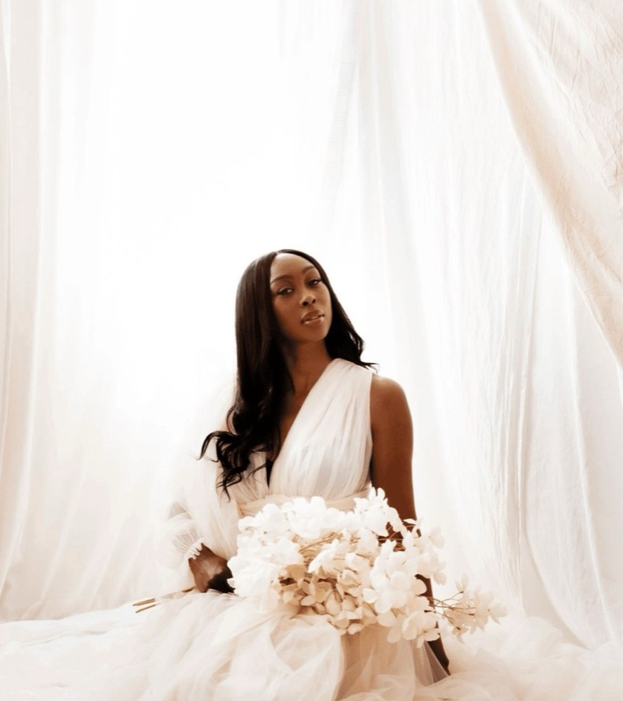
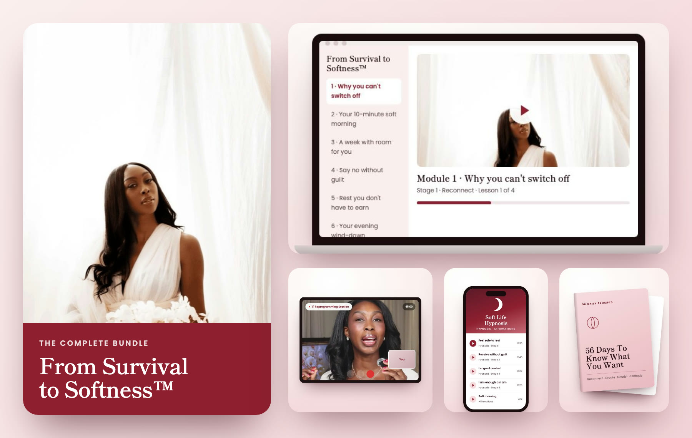

Exclusive Message From Urania
FAQ included below
...so you can finally rest without guilt, fall asleep without your mind racing and actually enjoy your life again, without giving up your ambition or the people who count on you.

A 5-minute message from Urania
Secure your spot today

My flagship program, a step-by-step 4-stage method where I take you from survival mode to a soft, calm life in just 8 weeks. This includes my full Reconnect, Create, Nourish & Embody method, my 10-minute Soft Morning Routine, the exact Soft Calendar I use to plan my own week, boundaries you can say out loud without guilt, the Hard Week Protocol for the weeks when everything lands on you, my Soft Sunday Reset, a journal prompt for every single day, 6 live coaching calls with me and a ton more, so you can finally rest without feeling like you have to earn it, stop running on empty and feel soft and feminine again. ($2,997 Value)
Just you and me for 45 minutes. Your head already knows you deserve rest, but the rest of you doesn't believe it yet. In this session we find the belief underneath it, like "I have to earn my rest", "I have to do it all alone" or "I have to be perfect to be loved", and we reprogram it. You pick what we work on: self-worth, receiving, love or money. ($397 Value)
In early January we meet live, and I walk you through closing 2026 and planning 2027 the soft way. Most women don't have a goal problem. They start January excited, push on hard mode, burn out by February and quit. In this workshop you build your year around your energy and your real calendar, so this is the year you actually follow through. Includes my 2026 Reflection Workbook. ($297 Value)
Get access to my 4 guided hypnosis sessions, one for every stage: Feel Safe To Rest, Receive Without Guilt, Let Go Of Control and I Am Enough As I Am. You listen in bed, and they work on the part of you that logic can't reach. You'll work on things like the guilt when you sit down, the racing thoughts at night, the need to control everything, people-pleasing, feeling like you're never enough and a ton more. My guided meditations have over 1 million views on YouTube, and these are made only for the women in this program. ($497 Value)
This is my NEWEST training, built from my most popular dating videos, where I show you how to stop chasing, keep high standards without being hard, and finally let yourself receive. If you're single, dating, or in a relationship where you've become the one who does everything, this training will show you how to bring softness back into your love life. ($297 Value)
When something comes up on a Tuesday, you don't have to wait for the next call. Send me a voice note Monday to Friday and I answer within 24 hours, for all 8 weeks. Only 7 spots, because I answer every message myself. ($1,500 Value)
Doing everything alone is how most of us ended up in survival mode. When you join From Survival to Softness™, you get immediate access to the Soft Circle, my private community where you connect with the other women in the program, plus lifetime access to every lesson and recording.
Total Value $5,985
Normal Price: $997
ONLY $697 TODAY
CLAIM MY SPOT NOWNormally $5,985 - Yours For $697Pocket Urania goes to the first 7 women who join.
Your videos are so beneficial to helping me get out of survival mode and truly helping me embrace softness.
Your videos are so beneficial to helping me get out of survival mode and truly helping me embrace softness.
I never switch off. I hardly sleep.
2:53 wow you just literally spoke to my everyday. Being a mother a business woman, I never switch off. I hardly sleep
At 55 I begin to live in balance.
I am the oldest daughter of a narcissistic mother and an absent father... I recognise the 3 archetypes in me...at 55 I begin to live in balance...love you urania and all the women in this community
I make a quiet decision every day to stay soft and gentle.
I'm so happy to be healed and in my feminine. I make a quiet decision every day to stay soft and gentle.
I'm learning to be different and set boundaries and reparent myself.
You are absolutely spot on! I am a combination of all of them. I'm learning to be different and set boundaries and reparent myself. Thanks for this
You have been such a light on my journey.
Thank you so much Urania. You have been such a light on my journey.
The program starts on Saturday 21 November, not on the day you join, and runs for 8 weeks until Saturday 16 January. After you join you get a welcome email with everything you need before we start. Each week you get the lessons for that stage, and we meet live 6 times. Plan for about 1 to 2 hours a week.
Every session is recorded and you keep lifetime access, so you can watch it when it suits you. You can also send me your question beforehand.
Both. The live sessions are with a small group of women, and every woman who joins also gets a private 1:1 subconscious reprogramming session with me. The first 7 women also get Pocket Urania, my voice-note support between sessions.
That's exactly who this program is for. Nothing here asks you to add more to your plate. We start by making space, and the Hard Week Protocol gives you a 10-minute version of everything for the weeks when life gets loud.
I understand. I spent years trying to fix my exhaustion with one self-care routine after another, and nothing changed until I learned to feel safe in my own body. Normally the program is $997, and right now it's yours for $697. That price is only for this round.
Videos give you ideas, and the program gives you your own plan. Inside, you build your personal Soft Life Blueprint step by step, you get live coaching, a 1:1 reprogramming session with me and support between sessions, so it doesn't stay a nice idea you forget by Monday.
No. Feminine energy is part of it, but this is also very practical: your morning, your week, your boundaries and your calendar. The inner work helps you know what you need, and the practical work makes room for it.
Yes. Book a free call with me below and we'll see together whether it fits.
Not sure it's for you? Book a free call with me